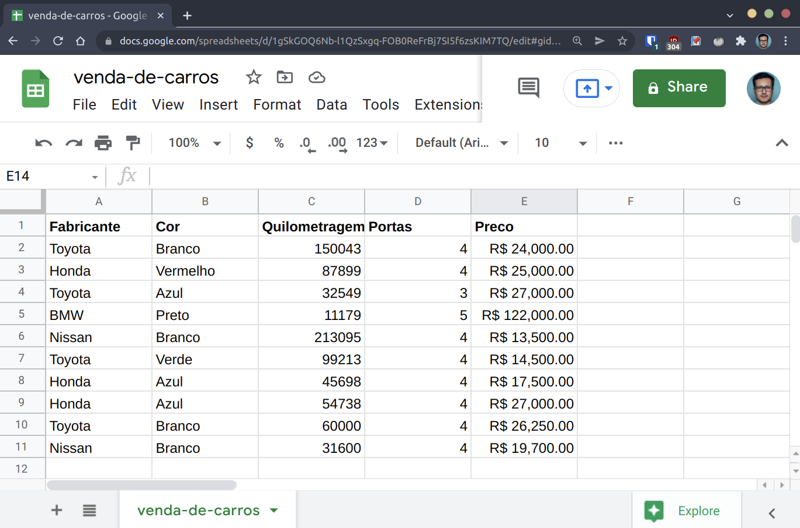
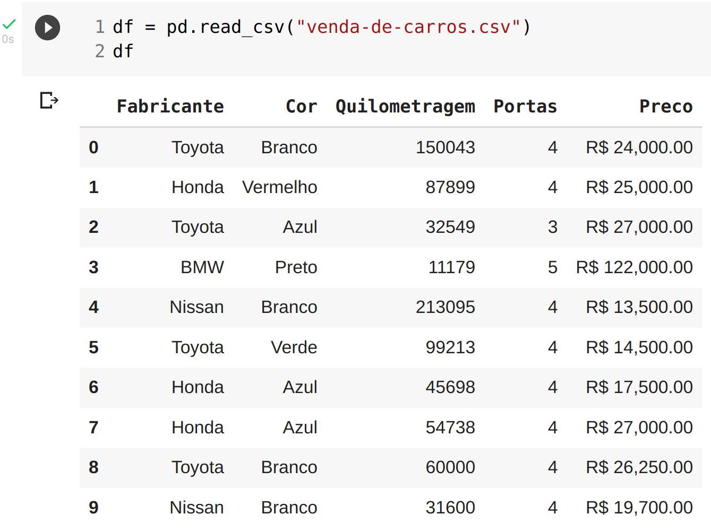
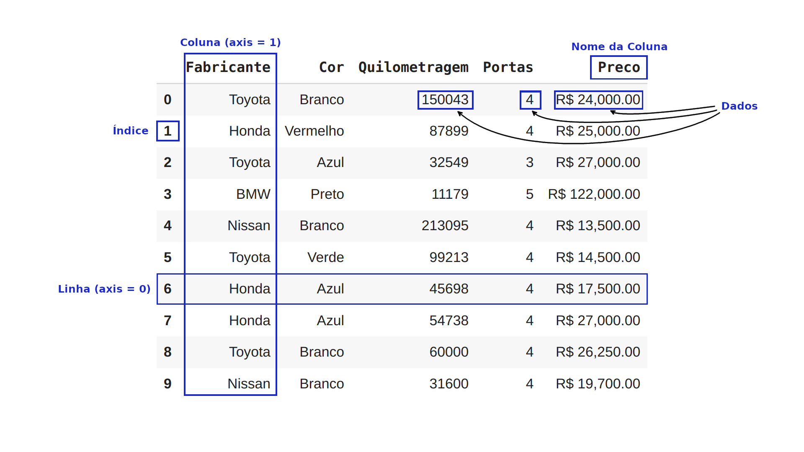
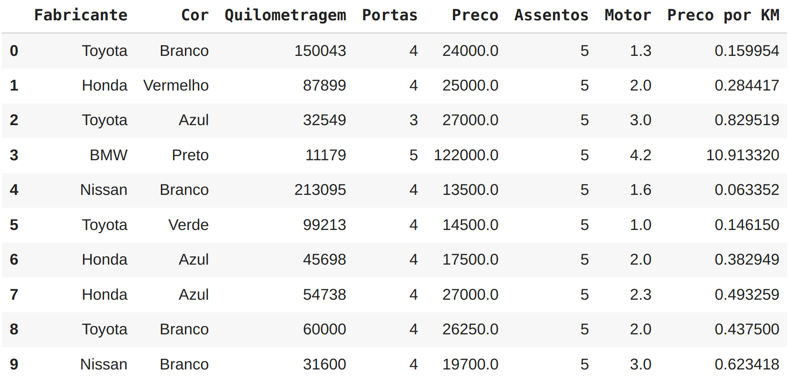
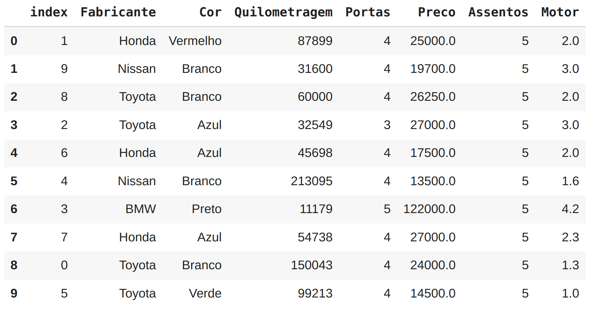

Manipulando dados com Pandas
Como vimos anteriormente, criar Séries e DataFrame do zero é legal, mas normalmente faremos a importação dos dados no formato de um arquivo .csv ou planilha.
O Pandas permite a importação de dados de maneira fácil por meio de funções como pd.read_csv() e pd.read_excel().
Por exemplo, vamos obter as informações deste documento do Google Sheet:

Depois de exportá-lo como um arquivo .csv, podemos agora importá-lo no Pandas com pd.read_csv() e criar o nosso DataFrame:

Agora temos os mesmos dados da planilha disponíveis em um DataFrame Pandas. Isso permite que você aproveite todas as funcionalidades do Pandas para explorar os dados.
Anatomia de um DataFrame
Abaixo vemos um resumo dos principais componentes de um DataFrame:

Explorando os dados
Uma das primeiras tarefas que fazemos logo após importar os dados para um DataFrame Pandas é começar a explorá-lo. O Pandas possui muitas funções internas que nos permitem obter informações descritivas dos dados, .dtypes por exemplo nos mostra que tipo de dados cada coluna contém:
Dtypes
df.dtypes
Fabricante object
Cor object
Quilometragem int64
Portas int64
Preco object
dtype: object
Note que a coluna Preco não é um número inteiro como Quilometragem e Portas. Não se preocupe isso é fácil de consertar e faremos isso em outro momento.
Describe
A função .describe() nos mostra uma visão estatística de todas as colunas numéricas:
df.describe()
| Quilometragem | Portas | |
|---|---|---|
| count | 10.000000 | 10.000000 |
| mean | 78601.400000 | 4.000000 |
| std | 61983.471735 | 0.471405 |
| min | 11179.000000 | 3.000000 |
| 25% | 35836.250000 | 4.000000 |
| 50% | 57369.000000 | 4.000000 |
| 75% | 96384.500000 | 4.000000 |
| max | 213095.000000 | 5.000000 |
Info
Outra função muito utilizada é a .info(), que mostra quantas linhas existem, se há valores ausentes e os tipos de dados de cada coluna:
df.info()
<class 'pandas.core.frame.DataFrame'>
RangeIndex: 10 entries, 0 to 9
Data columns (total 5 columns):
# Column Non-Null Count Dtype
--- ------ -------------- -----
0 Fabricante 10 non-null object
1 Cor 10 non-null object
2 Quilometragem 10 non-null int64
3 Portas 10 non-null int64
4 Preco 10 non-null object
dtypes: int64(2), object(3)
memory usage: 528.0+ bytes
Mean e Sum
Pandas também disponibiliza várias funções estatísticas e matemáticas como .mean() e .sum() que podem ser aplicadas diretamente em um DataFrame ou Séries.
valores = pd.Series([3000, 3500, 11250])
valores.mean()
5916.666666666667
valores.sum()
17750
Columns
Usar essas funções em um DataFrame inteiro pode não fazer muito sentido, nesse caso podemos direcionar a função individualmente para uma coluna.
O método .columns mostrará todas as colunas de um DataFrame:
df.columns
Index(['Fabricante', 'Cor', 'Quilometragem', 'Portas', 'Preco'], dtype='object')
Selecionando uma coluna com dados numéricos podemos utilizar a função estatística .mean() novamente:
df["Quilometragem"].mean()
78601.4
Visualizando e selecionando dados
Na prática, realizar alterações nos dados e visualizá-los constantemente é uma tarefa de rotina. Nem sempre precisamos alterar todos os dados de um DataFrame, portanto veremos maneiras diferentes de selecionar.
Head
Para visualizar as primeiras 5 linhas do seu DataFrame existe a função .head() que é muito utilizada:
df.head()
| Fabricante | Cor | Quilometragem | Portas | Preco | |
|---|---|---|---|---|---|
| 0 | Toyota | Branco | 150043 | 4 | R$ 24,000.00 |
| 1 | Honda | Vermelho | 87899 | 4 | R$ 25,000.00 |
| 2 | Toyota | Azul | 32549 | 3 | R$ 27,000.00 |
| 3 | BMW | Preto | 11179 | 5 | R$ 122,000.00 |
| 4 | Nissan | Branco | 213095 | 4 | R$ 13,500.00 |
Para selecionar mais de 5, você pode passar o valor desejado como argumento na função, por exemplo: .head(7).
Tail
Outro método muito utilizado é o .tail() que seleciona as últimas 5 linhas do seu DataFrame:
df.tail()
| Fabricante | Cor | Quilometragem | Portas | Preco | |
|---|---|---|---|---|---|
| 5 | Toyota | Verde | 99213 | 4 | R$ 14,500.00 |
| 6 | Honda | Azul | 45698 | 4 | R$ 17,500.00 |
| 7 | Honda | Azul | 54738 | 4 | R$ 27,000.00 |
| 8 | Toyota | Branco | 60000 | 4 | R$ 26,250.00 |
| 9 | Nissan | Branco | 31600 | 4 | R$ 19,700.00 |
Loc e Iloc
Por meio das instruções .loc[] e .iloc[] podemos selecionar dados de Séries e DataFrames, essas opções são muito utilizadas. Para ilustrar o uso em uma Série, vamos criar uma:
animais = pd.Series(["gato", "ave", "cachorro", "cobra", "leão", "cavalo"],
index=[0, 3, 8, 9, 6, 3])
animais
0 gato
3 ave
8 cachorro
9 cobra
6 leão
3 cavalo
dtype: object
Agora vamos utilizar o .loc[] informando como valor de entrada um número inteiro que corresponde ao índice da nossa Série:
animais.loc[3]
3 ave
3 cavalo
dtype: object
Temos como retorno os valores que tem como índice o número 3.
Já com o .iloc[]:
animais.iloc[3]
cobra
O valor retornado é bem diferente cobra que tem como índice o número 9. Isso acontece pois o .iloc[] faz uma seleção pela posição dos dados na Série ou DataFrame. Vamos testar esses recursos agora no nosso DataFrame:
df.loc[3]
Fabricante BMW
Cor Preto
Quilometragem 11179
Portas 5
Preco R$ 122,000.00
Name: 3, dtype: object
df.iloc[3]
Fabricante BMW
Cor Preto
Quilometragem 11179
Portas 5
Preco R$ 122,000.00
Name: 3, dtype: object
Ambos .loc[] e .iloc[] retornaram o mesmo valor pois as informações no DataFrame exibidas estão em ordem tanto na posição quanto no índice.
Ainda podemos utilizar o slicing com .loc[] e .iloc[], selecionando dados em um range:
animais.iloc[:3]
0 gato
3 ave
8 cachorro
dtype: object
Lembre-se, utilize
.loc[]quando estiver selecionando dados pelo índice e.iloc[]quando estiver referindo-se a posições no DataFrame.
Se quiser selecionar uma coluna em particular use ['NOME_DA_COLUNA']:
df["Fabricante"]
0 Toyota
1 Honda
2 Toyota
3 BMW
4 Nissan
5 Toyota
6 Honda
7 Honda
8 Toyota
9 Nissan
Name: Fabricante, dtype: object
Ao selecionar colunas podemos elaborar filtros condicionais entre colchetes, vejamos a sintaxe:
df[df["Quilometragem"] > 100000]
| Fabricante | Cor | Quilometragem | Portas | Preco | |
|---|---|---|---|---|---|
| 0 | Toyota | Branco | 150043 | 4 | R$ 24,000.00 |
| 4 | Nissan | Branco | 213095 | 4 | R$ 13,500.00 |
No exemplo estamos filtrando a coluna Quilometragem adicionando a condição para retornar apenas os carros que possuem uma quilometragem maior que 100.000.
Que tal elaborar um filtro para listar apenas os carros da Honda ?
df[df["Fabricante"] == "Honda"]
| Fabricante | Cor | Quilometragem | Portas | Preco | |
|---|---|---|---|---|---|
| 1 | Honda | Vermelho | 87899 | 4 | R$ 25,000.00 |
| 6 | Honda | Azul | 45698 | 4 | R$ 17,500.00 |
| 7 | Honda | Azul | 54738 | 4 | R$ 27,000.00 |
Groupby
Para comparar mais colunas no contexto de outra coluna, podemos usar o .groupby(), por exemplo, podemos agrupar os dados por fabricante e calcular a média das colunas numéricas:
df.groupby(["Fabricante"]).mean()
| Fabricante | Quilometragem | Portas |
|---|---|---|
| BMW | 11179.000000 | 5.00 |
| Honda | 62778.333333 | 4.00 |
| Nissan | 122347.500000 | 4.00 |
| Toyota | 85451.250000 | 3.75 |
Replace
A coluna de preço no DataFrame ainda não foi convertida para um tipo numérico, vamos tratar isso. Primeiro precisamos elaborar uma expressão regular para eliminar os caracteres R$ e ,. O Pandas permite isso por meio do método str.replace, para persistir a mudança no DataFrame é comum atribuir a mudança ao próprio DataFrame:
df["Preco"] = df["Preco"].str.replace('[/R$\,]', '', regex=True)
Agora vejamos como ficaram os dados:
df.head(3)
| Fabricante | Cor | Quilometragem | Portas | Preco | |
|---|---|---|---|---|---|
| 0 | Toyota | Branco | 150043 | 4 | 24000.00 |
| 1 | Honda | Vermelho | 87899 | 4 | 25000.00 |
| 2 | Toyota | Azul | 32549 | 3 | 27000.00 |
A coluna de preço já exibe os novos valores formatados, porém os dados ainda não são numéricos:
df.info()
RangeIndex: 10 entries, 0 to 9
Data columns (total 5 columns):
# Column Non-Null Count Dtype
--- ------ -------------- -----
0 Fabricante 10 non-null object
1 Cor 10 non-null object
2 Quilometragem 10 non-null int64
3 Portas 10 non-null int64
4 Preco 10 non-null object
dtypes: int64(2), object(3)
memory usage: 528.0+ bytes
Numeric
Como podemos ver Preco continua sendo do tipo object. Podemos corrigir isso com a função to_numeric do Pandas:
df["Preco"] = pd.to_numeric(df["Preco"])
df.head(3)
| Fabricante | Cor | Quilometragem | Portas | Preco | |
|---|---|---|---|---|---|
| 0 | Toyota | Branco | 150043 | 4 | 24000.0 |
| 1 | Honda | Vermelho | 87899 | 4 | 25000.0 |
| 2 | Toyota | Azul | 32549 | 3 | 27000.0 |
Se verificarmos o tipo novamente veremos que agora a coluna Preco é do tipo float64:
df.info()
RangeIndex: 10 entries, 0 to 9
Data columns (total 5 columns):
# Column Non-Null Count Dtype
--- ------ -------------- -----
0 Fabricante 10 non-null object
1 Cor 10 non-null object
2 Quilometragem 10 non-null int64
3 Portas 10 non-null int64
4 Preco 10 non-null float64
dtypes: float64(1), int64(2), object(2)
memory usage: 528.0+ bytes
Um desafio muito comum em Data Science é preencher dados ausentes. É provável que em algum momento você trabalhe com um DataFrame incompleto e terá que decidir como preencher os dados ausentes ou remover linhas de dados ausentes. Vamos verificar como fazer isso em uma versão do nosso DataFrame com valores ausentes:
df2 = pd.read_csv("venda-de-carros-dados-ausentes.csv")
df2
| Fabricante | Cor | Quilometragem | Portas | Preco | |
|---|---|---|---|---|---|
| 0 | Toyota | Branco | 150043.0 | 4.0 | 24000.0 |
| 1 | Honda | Vermelho | 87899.0 | 4.0 | 25000.0 |
| 2 | Toyota | Azul | NaN | 3.0 | 27000.0 |
| 3 | BMW | Preto | 11179.0 | 5.0 | 122000.0 |
| 4 | Nissan | Branco | 213095.0 | 4.0 | 13500.0 |
| 5 | Toyota | Verde | NaN | 4.0 | 14500.0 |
| 6 | Honda | NaN | NaN | 4.0 | 17500.0 |
| 7 | Honda | Azul | NaN | 4.0 | NaN |
| 8 | Toyota | Branco | 60000.0 | NaN | NaN |
| 9 | NaN | Branco | 31600.0 | 4.0 | 19700.0 |
Fillna
Os valores ausentes são mostrados por NaN no Pandas, isso é considerado o equivalente ao None em Python. Vamos usar a função .fillna() para preencher a coluna Quilometragem com a média dos outros valores da mesma coluna, dessa vez não vamos reatribuir a coluna para persistir os dados no DataFrame, em vez disso, usaremos a opção inplace=True:
df2["Quilometragem"].fillna(df2["Quilometragem"].mean(), inplace=True)
df2
| Fabricante | Cor | Quilometragem | Portas | Preco | |
|---|---|---|---|---|---|
| 0 | Toyota | Branco | 150043.000000 | 4.0 | 24000.0 |
| 1 | Honda | Vermelho | 87899.000000 | 4.0 | 25000.0 |
| 2 | Toyota | Azul | 92302.666667 | 3.0 | 27000.0 |
| 3 | BMW | Preto | 11179.000000 | 5.0 | 122000.0 |
| 4 | Nissan | Branco | 213095.000000 | 4.0 | 13500.0 |
| 5 | Toyota | Verde | 92302.666667 | 4.0 | 14500.0 |
| 6 | Honda | NaN | 92302.666667 | 4.0 | 17500.0 |
| 7 | Honda | Azul | 92302.666667 | 4.0 | NaN |
| 8 | Toyota | Branco | 60000.000000 | NaN | NaN |
| 9 | NaN | Branco | 31600.000000 | 4.0 | 19700.0 |
Dropna
Perfeito! Os valores ausentes da coluna Quilometragem foram preenchidos com o valor médio da mesma coluna. Digamos que você queira apenas remover todas as linhas com dados ausentes e trabalhar apenas com as linhas que possuem todos os valores preenchidos, podemos fazer isso usando o .dropna():
df2.dropna(inplace=True)
df2
| Fabricante | Cor | Quilometragem | Portas | Preco | |
|---|---|---|---|---|---|
| 0 | Toyota | Branco | 150043.000000 | 4.0 | 24000.0 |
| 1 | Honda | Vermelho | 87899.000000 | 4.0 | 25000.0 |
| 2 | Toyota | Azul | 92302.666667 | 3.0 | 27000.0 |
| 3 | BMW | Preto | 11179.000000 | 5.0 | 122000.0 |
| 4 | Nissan | Branco | 213095.000000 | 4.0 | 13500.0 |
| 5 | Toyota | Verde | 92302.666667 | 4.0 | 14500.0 |
Mas e se você quisesse criar dados em vez de remover ou preencher ?
Por exemplo, adicionando uma coluna nova chamada Assentos para o número de lugares disponíveis no carro. Pandas permite a criação simples de colunas extras no DataFrame usando Series, Lista ou uma coluna existente:
qtde_assentos = pd.Series([5, 5, 5, 5, 5, 5, 5, 5, 5, 5])
df["Assentos"] = qtde_assentos
df
| Fabricante | Cor | Quilometragem | Portas | Preco | Assentos | |
|---|---|---|---|---|---|---|
| 0 | Toyota | Branco | 150043 | 4 | 24000.0 | 5 |
| 1 | Honda | Vermelho | 87899 | 4 | 25000.0 | 5 |
| 2 | Toyota | Azul | 32549 | 3 | 27000.0 | 5 |
| 3 | BMW | Preto | 11179 | 5 | 122000.0 | 5 |
| 4 | Nissan | Branco | 213095 | 4 | 13500.0 | 5 |
| 5 | Toyota | Verde | 99213 | 4 | 14500.0 | 5 |
| 6 | Honda | Azul | 45698 | 4 | 17500.0 | 5 |
| 7 | Honda | Azul | 54738 | 4 | 27000.0 | 5 |
| 8 | Toyota | Branco | 60000 | 4 | 26250.0 | 5 |
| 9 | Nissan | Branco | 31600 | 4 | 19700.0 | 5 |
A coluna assentos foi criada por meio de uma Series, vamos criar outra coluna chamada Motor, dessa vez usando uma lista Python:
motor_lista = [1.3, 2.0, 3.0, 4.2, 1.6, 1, 2.0, 2.3, 2.0, 3.0]
df["Motor"] = motor_lista
df
| Fabricante | Cor | Quilometragem | Portas | Preco | Assentos | Motor | |
|---|---|---|---|---|---|---|---|
| 0 | Toyota | Branco | 150043 | 4 | 24000.0 | 5 | 1.3 |
| 1 | Honda | Vermelho | 87899 | 4 | 25000.0 | 5 | 2.0 |
| 2 | Toyota | Azul | 32549 | 3 | 27000.0 | 5 | 3.0 |
| 3 | BMW | Preto | 11179 | 5 | 122000.0 | 5 | 4.2 |
| 4 | Nissan | Branco | 213095 | 4 | 13500.0 | 5 | 1.6 |
| 5 | Toyota | Verde | 99213 | 4 | 14500.0 | 5 | 1.0 |
| 6 | Honda | Azul | 45698 | 4 | 17500.0 | 5 | 2.0 |
| 7 | Honda | Azul | 54738 | 4 | 27000.0 | 5 | 2.3 |
| 8 | Toyota | Branco | 60000 | 4 | 26250.0 | 5 | 2.0 |
| 9 | Nissan | Branco | 31600 | 4 | 19700.0 | 5 | 3.0 |
Por fim, vamos criar mais uma coluna, dessa vez combinando diretamente os valores de outras colunas. Dividindo o preço do carro por sua quilometragem teremos o preço por quilômetro, esses serão os dados da nova coluna:
df["Preco por KM"] = df["Preco"] / df["Quilometragem"]
df

Drop
Esse tipo de criação de coluna é chamado de Feature Engineering. Se fabricante, cor e quantidade de portas são características dos dados, a criação de preço por quilômetro pode ser outra. Nesse exemplo não foi uma boa escolha, então vamos remover essa coluna. Para remover uma só coluna podemos usar o .drop('NOME_DA_COLUNA', axis=1):
df = df.drop("Preco por KM", axis=1)
df
| Fabricante | Cor | Quilometragem | Portas | Preco | Assentos | Motor | |
|---|---|---|---|---|---|---|---|
| 0 | Toyota | Branco | 150043 | 4 | 24000.0 | 5 | 1.3 |
| 1 | Honda | Vermelho | 87899 | 4 | 25000.0 | 5 | 2.0 |
| 2 | Toyota | Azul | 32549 | 3 | 27000.0 | 5 | 3.0 |
| 3 | BMW | Preto | 11179 | 5 | 122000.0 | 5 | 4.2 |
| 4 | Nissan | Branco | 213095 | 4 | 13500.0 | 5 | 1.6 |
| 5 | Toyota | Verde | 99213 | 4 | 14500.0 | 5 | 1.0 |
| 6 | Honda | Azul | 45698 | 4 | 17500.0 | 5 | 2.0 |
| 7 | Honda | Azul | 54738 | 4 | 27000.0 | 5 | 2.3 |
| 8 | Toyota | Branco | 60000 | 4 | 26250.0 | 5 | 2.0 |
| 9 | Nissan | Branco | 31600 | 4 | 19700.0 | 5 | 3.0 |
Sample
Outro recurso interessante no Pandas é o de ordenação, digamos que você precise embaralhar a ordem do seu DataFrame para poder dividi-lo em conjuntos de treinamento, teste e validação para utilizar em um projeto de Machine Learning. Para isso temos o recurso .sample(frac=1), essa função pega diferentes linhas de um DataFrame e embaralha. O parâmetro frac configura a fração que será utilizada para embaralhar, onde 1 equivale a 100% das linhas.
df_sample = df.sample(frac=1)
df_sample
| Fabricante | Cor | Quilometragem | Portas | Preco | Assentos | Motor | |
|---|---|---|---|---|---|---|---|
| 3 | BMW | Preto | 11179 | 5 | 122000.0 | 5 | 4.2 |
| 8 | Toyota | Branco | 60000 | 4 | 26250.0 | 5 | 2.0 |
| 9 | Nissan | Branco | 31600 | 4 | 19700.0 | 5 | 3.0 |
| 6 | Honda | Azul | 45698 | 4 | 17500.0 | 5 | 2.0 |
| 5 | Toyota | Verde | 99213 | 4 | 14500.0 | 5 | 1.0 |
| 4 | Nissan | Branco | 213095 | 4 | 13500.0 | 5 | 1.6 |
| 1 | Honda | Vermelho | 87899 | 4 | 25000.0 | 5 | 2.0 |
| 0 | Toyota | Branco | 150043 | 4 | 24000.0 | 5 | 1.3 |
| 7 | Honda | Azul | 54738 | 4 | 27000.0 | 5 | 2.3 |
| 2 | Toyota | Azul | 32549 | 3 | 27000.0 | 5 | 3.0 |
Reset index
Note como as linhas permanecem intactas, apenas a ordem é alterada e isso pode ser verificado pelos índices. Agora, e se você quisesse colocar os índices de volta em ordem ?
Nesse caso podemos utilizar o .reset_index():
df_sample.reset_index()

Ao utilizar .reset_index() em um DataFrame, os números de índice retornam para o padrão, porém ele também cria uma nova coluna de índice contendo os valores anteriores.
WIP